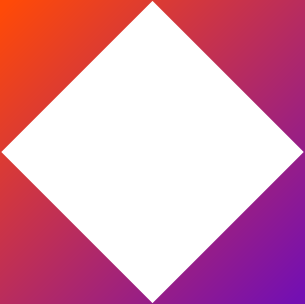
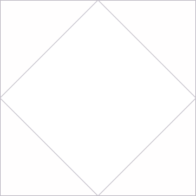
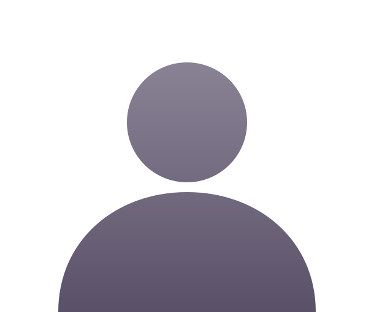
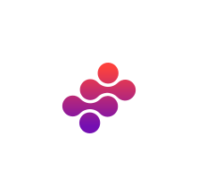
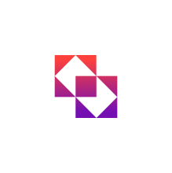
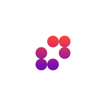

USA Registered • Fully Online • Open to the world
You.AI Builder.
At the world’s first AI-exclusive degree granting institution, you learn by building real AI projects, at your pace, with someone in your corner, and leave proud of who you’ve become.
- 100%AI-Focused
- Project-BasedLearning
- Human + AISupport

Every AI building starts somewhere
You.Starting Here.
There's more than one way into AI. Whether you're exploring what's possible, developing new skills, or preparing for a new career, find the path that fits your ambitions.
- Get Started.
I’m new
to AI.Start withPowers of AI
- Begin Learning
I want a
specific skill.Start withCustom AI, Agentic AI,
AI-powered Python - Earn A Degree
I want a
career in AI.Start withAssociate & Bachelor’s
Degrees in AI of AI - Advance Your Career
I’m ready
to lead.Start withAdvanced AI Engineer
Certificate, M.S. in AI
Engineering of AI
You.Building.
More than a grade. Proof you can build.
Every course ends with a real AI project, guided by industry experts. No exams. By the end, your GitHub portfolio speaks for you.
See Real Student ProjectsLearn from people who are shaping AI
You.With Leaders.
Learning from people who are shaping AI. The people teaching you aren’t just watching the future happen. They’re helping build it now. And they are here to help you build yours.
Luis Serrano
AI Scientist, Ex-Lead AI Educator, Apple
Eduardo Kassner
Chief Data & AI Officer
Microsoft
Tomas Pfister
Head of AI Research
Google Cloud
Stuart Russell
Co-chair, WEF Council on AI, Distinguished Professor of CS
UC Berkeley
Our faculty and advisors have worked at some of the world's leading technology companies.
You.Next.
Learner stories
Story 1 of 4
“The course is well-structured, and the facilitators are approachable and supportive at every step. Their guidance helped me succeed, module by module.
The success coaching, in particular, has been a truly eye-opening experience.."
Laura Morales
AI Developer Program



Your pace. Your People.
You.Never Alone.
Life doesn’t stop because you’re learning. Move at the pace that works for you, with people who know when to challenge you, when to help you, and when you simply need someone in your corner.

Your success partner
Your guide and biggest supporter, from first code to next career move.

Your pace, never behind
Fit learning around work, family and life.

Human +
AI SupportGet real human support and AI- Powered help whenever you get stuck.
the next 25 years belong to those who master AI
You.Ahead.
AI is creating new industries, transforming existing ones, and opening up entirely new career paths. The opportunity has never been greater or more global.
- 85Mnew AI-related
jobs by 2030 - 3Xfaster growth
than other fields - 70%of companies plan
to increase AI hiring

We believe in the transformative power of education.
You.As We See You.
Education that leads to meaningful employment can transform lives. At Saras, we start by believing in your potential and build the learning experience around helping you move forward.
We see you as the future AI Builder and Leader.
Learn More About UsYou.First.
Financial plan that works for you.
Your ambition should never be limited by your financial circumstances. That's why Saras combines affordable tuition with scholarships and flexible payment plans to make AI education more accessible.
Our admissions counselors are here to help you explore your options, overcome financial barriers, and focus on what matters most: your future.